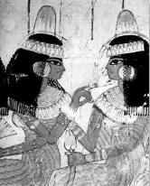

ŞEKİL 85. Eski Mısır’da bir ziyafet sahnesinden bir ayrıntıda, zengin takılar, süslü peruklar ve başlarında pomat külâhları bulunan kadınlar. Pomat külâhlarının eriyip akmasıyla kadınların elbiseleri üzerinde yağ lekelerinin oluştuğu görülmektedir (Thebes kentindeki bir mezardan duvar resmi; Yeni Krallık Dönemi, 18. Hanedan dönemi, İÖ ~1422-1411).161